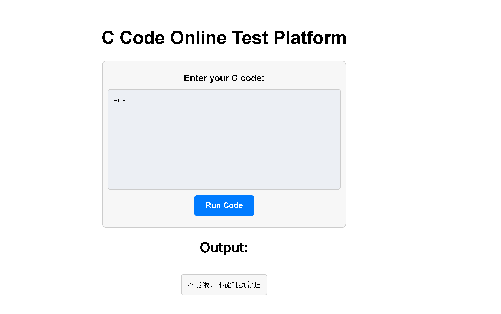
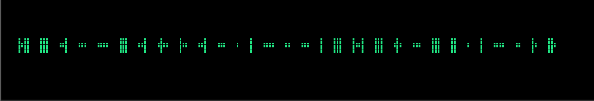
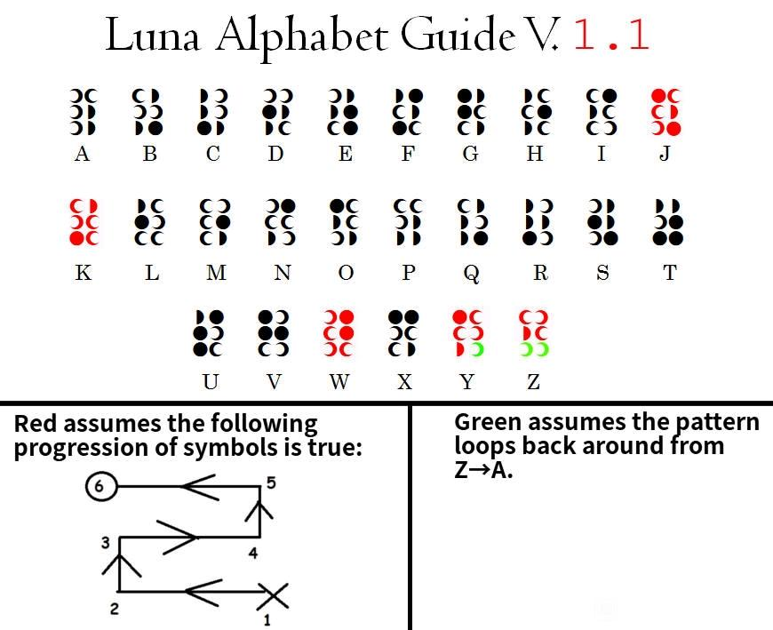
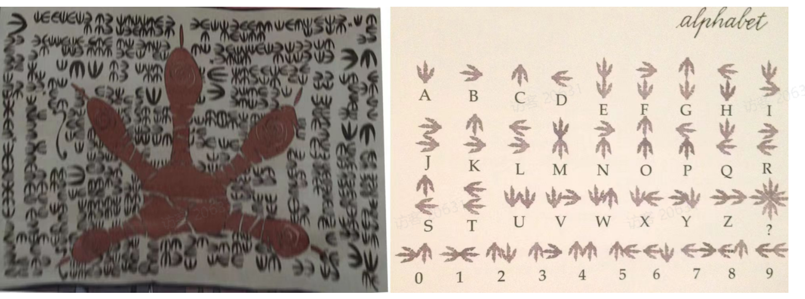
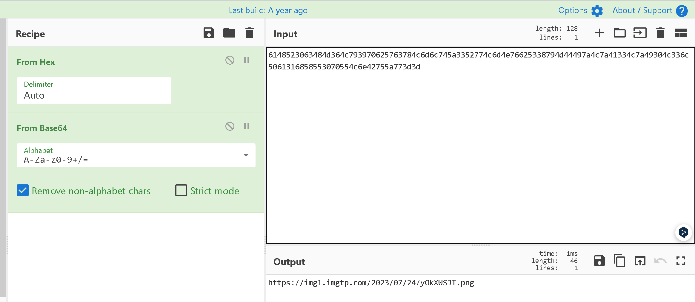
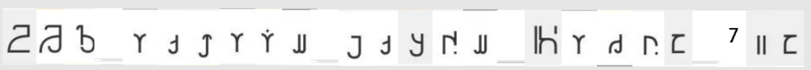
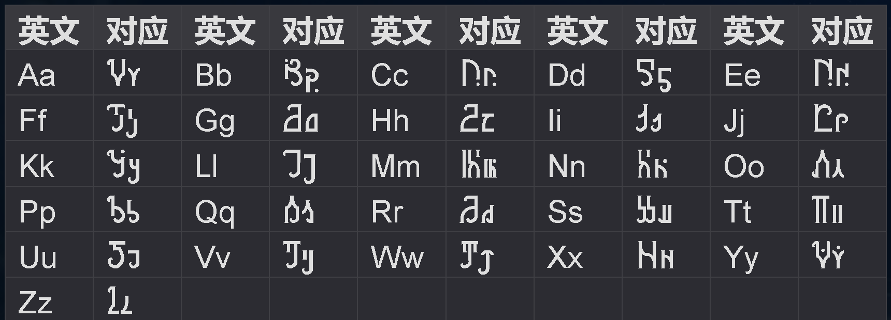

# codes
题目：你很会写代码吗，你会写有什么用！出来混 讲的是皮 tips:flag 格式为 Nepctf {},flag 存在环境变量，无需理会 Team_Hash
根据题目提示，flag 存在于环境变量中，直接用
env |
命令尝试，不出意外，被过滤了。

除此之外发现 system 也被过滤了。
既然题目是一个 C 语言执行框，那么用 C 语言打印环境变量试试
先了解下 C 程序如何打印环境变量：
// 程序启动时调用的函数名为 main。这个实现没有声明函数原型。它应该必须使用 int 的返回类型定义，并且不带参数： | |
int main(void) { /* ... */ } | |
// 或带有两个参数（这里称为 argc 和 argv）： | |
int main(int argc, char *argv[]) { /* ... */ } |
其中 'argc' 表示命令行参数的数量，'argv' 是一个指向指针数组的指针，每个指针指向一个表示命令行参数的字符串，紧随 'argc' 其后的是程序的环境变量，但由于这题中的 'env' 被禁了，导致 getenv 等函数都无法使用，不过一般环境变量都会在命令行里设置，所以通过打印命令行参数来间接获取到环境变量：
#include<stdio.h> | |
#include <stdlib.h> | |
int main(int argc,char *argv[]) { | |
for (int i=0; i<20; i++) { | |
printf("argc[%d]:%s\n",i,argv[i]); | |
} | |
return 0; | |
} |
得到如下信息：
argc[0]:/main
argc[1]:(null)
argc[2]:KUBERNETES_SERVICE_PORT=443
argc[3]:KUBERNETES_PORT=tcp://10.43.0.1:443
argc[4]:HOSTNAME=push-c68b6eaf3e2f4f22
argc[5]:SHLVL=0
argc[6]:HOME=/root
argc[7]:LC_CTYPE=C.UTF-8
argc[8]:WERKZEUG_SERVER_FD=3
argc[9]:_=./start.sh
argc[10]:KUBERNETES_PORT_443_TCP_ADDR=10.43.0.1
argc[11]:PATH=/usr/local/sbin:/usr/local/bin:/usr/sbin:/usr/bin:/sbin:/bin
argc[12]:KUBERNETES_PORT_443_TCP_PORT=443
argc[13]:KUBERNETES_PORT_443_TCP_PROTO=tcp
argc[14]:GZCTF_FLAG=Nepctf{easy_codes_398561e4-197a-44a0-abc6-229ffbeae526_[TEAM_HASH]} 🎈
argc[15]:KUBERNETES_SERVICE_PORT_HTTPS=443
argc[16]:KUBERNETES_PORT_443_TCP=tcp://10.43.0.1:443
argc[17]:PWD=/home/ctf
argc[18]:KUBERNETES_SERVICE_HOST=10.43.0.1
argc[19]:(null)
flag 存在 argc [14] 中
还有一种解法就是使用反斜杠绕过
#include <stdio.h> | |
int main() | |
{ | |
sy\ | |
stem("en\ | |
v"); | |
return 0;} |
这种你的注意把主函数中的内容取消缩进，不然出不了 flag。
# 小叮弹钢琴
小叮今天终于学会了弹钢琴，来看看他弹得怎么样吧
附件名：piano.mid
简单查询了 mid 文件：
MIDI 文件是二进制文件，其内部主要记录了乐曲播放时，音序器应发送给音源的 MIDI 指令和每条指令发送的时间点。 音序器读取这些时间信息和 MIDI 指令，通过在相应的时间发送相应的指令，以实现乐曲中音符的顺序播放和节拍信息。
丢给 audacity：

前半段摩斯密码：
-.-- --- ..- ... .... --- ..- .-.. -.. ..- ... . - .... .. ... - --- -..- --- .-. ... --- -- . - .... .. -. --.
解码：
YOUSHOULDUSETHISTOXORSOMETHING
后半段 16 进制：
0x370a05303c290e045005031c2b1858473a5f052117032c39230f005d1e17
再根据上面那句话的意思就是他两亦或运算一下
# 导入 binascii 模块，用于二进制和十六进制之间的转换操作 | |
import binascii | |
# 将字符串 "YOUSHOULDUSETHISTOXORSOMETHING" 转换为小写并编码为字节序列，然后转换为十六进制表示 | |
hex_string = binascii.b2a_hex(('YOUSHOULDUSETHISTOXORSOMETHING').lower().encode()) | |
print(hex_string) # 打印十六进制表示 | |
# 定义两个十六进制数 a 和 b | |
a = 0x796f7573686f756c6475736574686973746f786f72736f6d657468696e67 | |
b = 0x370a05303c290e045005031c2b1858473a5f052117032c39230f005d1e17 | |
# 对 a 和 b 进行异或运算，并将结果转换为十六进制表示，并去掉前缀 '0x' | |
xor_result = hex(a ^ b)[2:] | |
# 将异或结果的十六进制表示转换为字节序列，再转换为对应的原始二进制数据 | |
original_data = binascii.a2b_hex(xor_result) | |
print(original_data) # 打印还原的二进制数据 | |
#b'796f7573686f756c6475736574686973746f786f72736f6d657468696e67' | |
#b'NepCTF{h4ppy_p14N0}NepCTF{h4pp' |
# 陌生的语言
A 同学在回学校的路上捡到了一张纸条，你能帮帮她吗？
flag 格式：NepCTF
hint：A 同学的英文名为 “Atsuko Kagari”
hint:flag 格式请选手根据自身语感自行添加下划线
附件：

没有暗示和脑洞没法做。
先搜索 “Atsuko Kagari”，发现出自日本动漫 “小魔女学园”
按照下图新月文字和古龙语英文对照表即可获取 flag。


flag:NepCTF
# 你也喜欢三月七么
Nepnep 星球如约举办 CTF 大赛，消息传播至各大星球，开拓者一行人应邀而来 ———————————————————————————————————————
三月七：耶，终于来到 Nepnep 星球啦，让我看看正在火热进行的 Hacker 夺旗大赛群聊。啊！开拓者，这群名看起来怪怪的诶。 （伸出脑袋，凑近群名，轻轻的闻了一下）哇，好咸诶，开拓者你快来看看！
开拓者（U_id）：(端着下巴，磨蹭了一下，眼神若有所思）这好像需要经过啥 256 处理一下才能得到我们需要的关键。
三月七：那我们快想想怎么解开这个谜题！
flag 格式：NepCTF
hint:URL 为压缩包密码
附件中是个 txt 文件和需要密码的压缩包：
salt_lenth= 10
key_lenth= 16
iv= 88219bdee9c396eca3c637c0ea436058 #原始 iv 转 hex 的值
ciphertext= b700ae6d0cc979a4401f3dd440bf9703b292b57b6a16b79ade01af58025707fbc29941105d7f50f2657cf7eac735a800ecccdfd42bf6c6ce3b00c8734bf500c819e99e074f481dbece626ccc2f6e0562a81fe84e5dd9750f5a0bb7c20460577547d3255ba636402d6db8777e0c5a429d07a821bf7f9e0186e591dfcfb3bfedfc
先看题目描述，得到两个消息，一是群名是 salt，二是群名 sha256 之后就是 key，这就纯脑洞了，群名让我想起了 qq 群名 NepCTF2023，对应的长度也为 10，key 取 sha256 之后前 16 位
dd8e671df3882c5be6423cd030bd7cb6
再用 AES 解密：
6148523063484d364c793970625763784c6d6c745a3352774c6d4e76625338794d44497a4c7a41334c7a49304c336c5061316858553070554c6e42755a773d3d
最后先把 16 进制转换为字符串，得到一串 base64 编码，再对其解码得到图片链接：


这串只要玩过星穹铁道都能一眼就能看出是空间站「黑塔」和雅利洛 - VI 使用该文字 (●'◡'●)
星穹铁道智库

对照一下即可得到 flag:NepCTF
# Ez_BASIC_II
穿越回 1977 年的 Lemon 赶上了世界上第一批大规模生产的个人电脑发售。经过数月努力他终于拥有了一台计算机。他迫不及待地将自己编写的 BASIC 程序分享给了 H3，但由于 Lemon 对 BASIC 语言不熟悉导致他写错了代码段。数月后他带着装有程序的磁带回到了 21 世纪，但你能帮他还原磁带中的程序吗？
在线工具直接转换
https://www.my-trs-80.com/cassette/
拿到 BASIC 程序
CHR$(128)CHR$(128)CHR$(128)CHR$(128)CHR$(128)CHR$(128)CHR$(128)CHR$(128)CHR$(128)CHR$(13)CHR$(128)CHR$(128)CHR$(128)CHR$(160)CHR$(176)CHR$(176)CHR$(128)CHR$(128)CHR$(128)CHR$(13)CHR$(128)CHR$(128)CHR$(186)CHR$(135)CHR$(131)CHR$(139)CHR$(189)CHR$(128)CHR$(128)CHR$(13)CHR$(128)CHR$(128)CHR$(191)CHR$(143)CHR$(143)CHR$(143)CHR$(143)CHR$(128)CHR$(128)CHR$(13)CHR$(128)CHR$(128)CHR$(171)CHR$(180)CHR$(176)CHR$(176)CHR$(144)CHR$(128)CHR$(128)CHR$(13)CHR$(128)CHR$(128)CHR$(128)CHR$(130)CHR$(131)CHR$(131)CHR$(129)CHR$(128)CHR$(128)CHR$(13) | |
CHR$(128)CHR$(128)CHR$(128)CHR$(128)CHR$(128)CHR$(128)CHR$(128)CHR$(128)CHR$(128)CHR$(13)CHR$(128)CHR$(128)CHR$(160)CHR$(144)CHR$(176)CHR$(176)CHR$(128)CHR$(128)CHR$(128)CHR$(13)CHR$(128)CHR$(128)CHR$(170)CHR$(159)CHR$(135)CHR$(139)CHR$(189)CHR$(128)CHR$(128)CHR$(13)CHR$(128)CHR$(128)CHR$(170)CHR$(149)CHR$(128)CHR$(128)CHR$(191)CHR$(128)CHR$(128)CHR$(13)CHR$(128)CHR$(128)CHR$(170)CHR$(181)CHR$(176)CHR$(184)CHR$(151)CHR$(128)CHR$(128)CHR$(13)CHR$(128)CHR$(128)CHR$(170)CHR$(151)CHR$(131)CHR$(129)CHR$(128)CHR$(128)CHR$(128)CHR$(13) | |
CHR$(128)CHR$(128)CHR$(128)CHR$(128)CHR$(176)CHR$(176)CHR$(144)CHR$(128)CHR$(128)CHR$(13)CHR$(128)CHR$(128)CHR$(168)CHR$(159)CHR$(131)CHR$(131)CHR$(139)CHR$(128)CHR$(128)CHR$(13)CHR$(128)CHR$(128)CHR$(191)CHR$(128)CHR$(128)CHR$(128)CHR$(128)CHR$(128)CHR$(128)CHR$(13)CHR$(128)CHR$(128)CHR$(191)CHR$(128)CHR$(128)CHR$(128)CHR$(128)CHR$(128)CHR$(128)CHR$(13)CHR$(128)CHR$(128)CHR$(138)CHR$(189)CHR$(176)CHR$(176)CHR$(184)CHR$(128)CHR$(128)CHR$(13)CHR$(128)CHR$(128)CHR$(128)CHR$(130)CHR$(131)CHR$(131)CHR$(129)CHR$(128)CHR$(128)CHR$(13) | |
CHR$(128)CHR$(128)CHR$(176)CHR$(176)CHR$(176)CHR$(176)CHR$(176)CHR$(128)CHR$(128)CHR$(13)CHR$(128)CHR$(128)CHR$(131)CHR$(131)CHR$(191)CHR$(131)CHR$(131)CHR$(128)CHR$(128)CHR$(13)CHR$(128)CHR$(128)CHR$(128)CHR$(128)CHR$(191)CHR$(128)CHR$(128)CHR$(128)CHR$(128)CHR$(13)CHR$(128)CHR$(128)CHR$(128)CHR$(128)CHR$(191)CHR$(128)CHR$(128)CHR$(128)CHR$(128)CHR$(13)CHR$(128)CHR$(128)CHR$(128)CHR$(128)CHR$(191)CHR$(128)CHR$(128)CHR$(128)CHR$(128)CHR$(13)CHR$(128)CHR$(128)CHR$(128)CHR$(128)CHR$(131)CHR$(128)CHR$(128)CHR$(128)CHR$(128)CHR$(13) | |
CHR$(128)CHR$(128)CHR$(160)CHR$(176)CHR$(176)CHR$(176)CHR$(144)CHR$(128)CHR$(128)CHR$(13)CHR$(128)CHR$(128)CHR$(170)CHR$(151)CHR$(131)CHR$(131)CHR$(129)CHR$(128)CHR$(128)CHR$(13)CHR$(128)CHR$(128)CHR$(170)CHR$(181)CHR$(176)CHR$(176)CHR$(144)CHR$(128)CHR$(128)CHR$(13)CHR$(128)CHR$(128)CHR$(170)CHR$(151)CHR$(131)CHR$(131)CHR$(129)CHR$(128)CHR$(128)CHR$(13)CHR$(128)CHR$(128)CHR$(170)CHR$(149)CHR$(128)CHR$(128)CHR$(128)CHR$(128)CHR$(128)CHR$(13)CHR$(128)CHR$(128)CHR$(130)CHR$(129)CHR$(128)CHR$(128)CHR$(128)CHR$(128)CHR$(128)CHR$(13) | |
CHR$(128)CHR$(128)CHR$(128)CHR$(128)CHR$(184)CHR$(159)CHR$(149)CHR$(128)CHR$(128)CHR$(13)CHR$(128)CHR$(128)CHR$(128)CHR$(128)CHR$(191)CHR$(128)CHR$(128)CHR$(128)CHR$(128)CHR$(13)CHR$(128)CHR$(128)CHR$(160)CHR$(176)CHR$(159)CHR$(128)CHR$(128)CHR$(128)CHR$(128)CHR$(13)CHR$(128)CHR$(128)CHR$(130)CHR$(139)CHR$(189)CHR$(128)CHR$(128)CHR$(128)CHR$(128)CHR$(13)CHR$(128)CHR$(128)CHR$(128)CHR$(128)CHR$(191)CHR$(128)CHR$(128)CHR$(128)CHR$(128)CHR$(13)CHR$(128)CHR$(128)CHR$(128)CHR$(128)CHR$(191)CHR$(144)CHR$(128)CHR$(128)CHR$(128)CHR$(13) | |
CHR$(128)CHR$(128)CHR$(128)CHR$(128)CHR$(128)CHR$(128)CHR$(128)CHR$(128)CHR$(128)CHR$(13)CHR$(128)CHR$(128)CHR$(128)CHR$(160)CHR$(176)CHR$(176)CHR$(128)CHR$(128)CHR$(128)CHR$(13)CHR$(128)CHR$(128)CHR$(186)CHR$(135)CHR$(131)CHR$(139)CHR$(189)CHR$(128)CHR$(128)CHR$(13)CHR$(128)CHR$(128)CHR$(191)CHR$(143)CHR$(143)CHR$(143)CHR$(143)CHR$(128)CHR$(128)CHR$(13)CHR$(128)CHR$(128)CHR$(171)CHR$(180)CHR$(176)CHR$(176)CHR$(144)CHR$(128)CHR$(128)CHR$(13)CHR$(128)CHR$(128)CHR$(128)CHR$(130)CHR$(131)CHR$(131)CHR$(129)CHR$(128)CHR$(128)CHR$(13) | |
CHR$(128)CHR$(128)CHR$(160)CHR$(176)CHR$(176)CHR$(176)CHR$(144)CHR$(128)CHR$(128)CHR$(13)CHR$(128)CHR$(128)CHR$(170)CHR$(151)CHR$(131)CHR$(131)CHR$(129)CHR$(128)CHR$(128)CHR$(13)CHR$(128)CHR$(128)CHR$(170)CHR$(181)CHR$(176)CHR$(176)CHR$(128)CHR$(128)CHR$(128)CHR$(13)CHR$(128)CHR$(128)CHR$(130)CHR$(131)CHR$(131)CHR$(139)CHR$(189)CHR$(128)CHR$(128)CHR$(13)CHR$(128)CHR$(128)CHR$(160)CHR$(176)CHR$(176)CHR$(184)CHR$(151)CHR$(128)CHR$(128)CHR$(13)CHR$(128)CHR$(128)CHR$(130)CHR$(131)CHR$(131)CHR$(129)CHR$(128)CHR$(128)CHR$(128)CHR$(13) | |
CHR$(128)CHR$(128)CHR$(128)CHR$(160)CHR$(176)CHR$(144)CHR$(128)CHR$(128)CHR$(128)CHR$(13)CHR$(128)CHR$(128)CHR$(130)CHR$(135)CHR$(131)CHR$(175)CHR$(148)CHR$(128)CHR$(128)CHR$(13)CHR$(128)CHR$(128)CHR$(128)CHR$(128)CHR$(128)CHR$(186)CHR$(149)CHR$(128)CHR$(128)CHR$(13)CHR$(128)CHR$(128)CHR$(128)CHR$(128)CHR$(184)CHR$(135)CHR$(128)CHR$(128)CHR$(128)CHR$(13)CHR$(128)CHR$(128)CHR$(160)CHR$(190)CHR$(177)CHR$(176)CHR$(176)CHR$(128)CHR$(128)CHR$(13)CHR$(128)CHR$(128)CHR$(130)CHR$(131)CHR$(131)CHR$(131)CHR$(131)CHR$(128)CHR$(128)CHR$(13) | |
CHR$(128)CHR$(128)CHR$(128)CHR$(160)CHR$(176)CHR$(144)CHR$(128)CHR$(128)CHR$(128)CHR$(13)CHR$(128)CHR$(128)CHR$(186)CHR$(135)CHR$(131)CHR$(139)CHR$(181)CHR$(128)CHR$(128)CHR$(13)CHR$(128)CHR$(128)CHR$(191)CHR$(144)CHR$(128)CHR$(160)CHR$(191)CHR$(128)CHR$(128)CHR$(13)CHR$(128)CHR$(128)CHR$(130)CHR$(143)CHR$(143)CHR$(135)CHR$(191)CHR$(128)CHR$(128)CHR$(13)CHR$(128)CHR$(128)CHR$(160)CHR$(176)CHR$(176)CHR$(190)CHR$(149)CHR$(128)CHR$(128)CHR$(13)CHR$(128)CHR$(128)CHR$(130)CHR$(131)CHR$(131)CHR$(128)CHR$(128)CHR$(128)CHR$(128)CHR$(13) | |
CHR$(128)CHR$(128)CHR$(128)CHR$(176)CHR$(176)CHR$(144)CHR$(128)CHR$(128)CHR$(128)CHR$(13)CHR$(128)CHR$(128)CHR$(138)CHR$(131)CHR$(131)CHR$(175)CHR$(148)CHR$(128)CHR$(128)CHR$(13)CHR$(128)CHR$(128)CHR$(128)CHR$(160)CHR$(176)CHR$(158)CHR$(129)CHR$(128)CHR$(128)CHR$(13)CHR$(128)CHR$(128)CHR$(128)CHR$(130)CHR$(131)CHR$(139)CHR$(189)CHR$(128)CHR$(128)CHR$(13)CHR$(128)CHR$(128)CHR$(160)CHR$(176)CHR$(176)CHR$(184)CHR$(159)CHR$(128)CHR$(128)CHR$(13)CHR$(128)CHR$(128)CHR$(130)CHR$(131)CHR$(131)CHR$(129)CHR$(128)CHR$(128)CHR$(128)CHR$(13) | |
CHR$(128)CHR$(128)CHR$(128)CHR$(176)CHR$(176)CHR$(144)CHR$(128)CHR$(128)CHR$(128)CHR$(13)CHR$(128)CHR$(128)CHR$(138)CHR$(131)CHR$(131)CHR$(175)CHR$(148)CHR$(128)CHR$(128)CHR$(13)CHR$(128)CHR$(128)CHR$(128)CHR$(160)CHR$(176)CHR$(158)CHR$(129)CHR$(128)CHR$(128)CHR$(13)CHR$(128)CHR$(128)CHR$(128)CHR$(130)CHR$(131)CHR$(139)CHR$(189)CHR$(128)CHR$(128)CHR$(13)CHR$(128)CHR$(128)CHR$(160)CHR$(176)CHR$(176)CHR$(184)CHR$(159)CHR$(128)CHR$(128)CHR$(13)CHR$(128)CHR$(128)CHR$(130)CHR$(131)CHR$(131)CHR$(129)CHR$(128)CHR$(128)CHR$(128)CHR$(13) | |
CHR$(128)CHR$(128)CHR$(128)CHR$(176)CHR$(176)CHR$(144)CHR$(128)CHR$(128)CHR$(128)CHR$(13)CHR$(128)CHR$(128)CHR$(138)CHR$(131)CHR$(131)CHR$(175)CHR$(148)CHR$(128)CHR$(128)CHR$(13)CHR$(128)CHR$(128)CHR$(128)CHR$(160)CHR$(176)CHR$(158)CHR$(129)CHR$(128)CHR$(128)CHR$(13)CHR$(128)CHR$(128)CHR$(128)CHR$(130)CHR$(131)CHR$(139)CHR$(189)CHR$(128)CHR$(128)CHR$(13)CHR$(128)CHR$(128)CHR$(160)CHR$(176)CHR$(176)CHR$(184)CHR$(159)CHR$(128)CHR$(128)CHR$(13)CHR$(128)CHR$(128)CHR$(130)CHR$(131)CHR$(131)CHR$(129)CHR$(128)CHR$(128)CHR$(128)CHR$(13) | |
CHR$(128)CHR$(128)CHR$(128)CHR$(128)CHR$(128)CHR$(128)CHR$(128)CHR$(128)CHR$(128)CHR$(13)CHR$(128)CHR$(128)CHR$(128)CHR$(128)CHR$(176)CHR$(176)CHR$(128)CHR$(128)CHR$(128)CHR$(13)CHR$(128)CHR$(128)CHR$(160)CHR$(191)CHR$(135)CHR$(131)CHR$(149)CHR$(128)CHR$(128)CHR$(13)CHR$(128)CHR$(128)CHR$(170)CHR$(149)CHR$(128)CHR$(128)CHR$(128)CHR$(128)CHR$(128)CHR$(13)CHR$(128)CHR$(128)CHR$(130)CHR$(189)CHR$(176)CHR$(176)CHR$(148)CHR$(128)CHR$(128)CHR$(13)CHR$(128)CHR$(128)CHR$(128)CHR$(128)CHR$(131)CHR$(131)CHR$(128)CHR$(128)CHR$(128)CHR$(13) | |
CHR$(128)CHR$(128)CHR$(128)CHR$(128)CHR$(128)CHR$(128)CHR$(128)CHR$(128)CHR$(128)CHR$(13)CHR$(128)CHR$(128)CHR$(128)CHR$(128)CHR$(128)CHR$(128)CHR$(128)CHR$(128)CHR$(128)CHR$(13)CHR$(128)CHR$(128)CHR$(128)CHR$(128)CHR$(128)CHR$(128)CHR$(128)CHR$(128)CHR$(128)CHR$(13)CHR$(128)CHR$(128)CHR$(128)CHR$(143)CHR$(143)CHR$(143)CHR$(128)CHR$(128)CHR$(128)CHR$(13)CHR$(128)CHR$(128)CHR$(128)CHR$(128)CHR$(128)CHR$(128)CHR$(128)CHR$(128)CHR$(128)CHR$(13)CHR$(128)CHR$(128)CHR$(128)CHR$(128)CHR$(128)CHR$(128)CHR$(128)CHR$(128)CHR$(128)CHR$(13) | |
CHR$(128)CHR$(128)CHR$(128)CHR$(160)CHR$(176)CHR$(144)CHR$(128)CHR$(128)CHR$(128)CHR$(13)CHR$(128)CHR$(128)CHR$(130)CHR$(135)CHR$(131)CHR$(175)CHR$(148)CHR$(128)CHR$(128)CHR$(13)CHR$(128)CHR$(128)CHR$(128)CHR$(128)CHR$(128)CHR$(186)CHR$(149)CHR$(128)CHR$(128)CHR$(13)CHR$(128)CHR$(128)CHR$(128)CHR$(128)CHR$(184)CHR$(135)CHR$(128)CHR$(128)CHR$(128)CHR$(13)CHR$(128)CHR$(128)CHR$(160)CHR$(190)CHR$(177)CHR$(176)CHR$(176)CHR$(128)CHR$(128)CHR$(13)CHR$(128)CHR$(128)CHR$(130)CHR$(131)CHR$(131)CHR$(131)CHR$(131)CHR$(128)CHR$(128)CHR$(13) | |
CHR$(128)CHR$(128)CHR$(128)CHR$(160)CHR$(176)CHR$(128)CHR$(128)CHR$(128)CHR$(128)CHR$(13)CHR$(128)CHR$(128)CHR$(174)CHR$(135)CHR$(191)CHR$(128)CHR$(128)CHR$(128)CHR$(128)CHR$(13)CHR$(128)CHR$(128)CHR$(128)CHR$(128)CHR$(191)CHR$(128)CHR$(128)CHR$(128)CHR$(128)CHR$(13)CHR$(128)CHR$(128)CHR$(128)CHR$(128)CHR$(191)CHR$(128)CHR$(128)CHR$(128)CHR$(128)CHR$(13)CHR$(128)CHR$(128)CHR$(176)CHR$(176)CHR$(191)CHR$(176)CHR$(144)CHR$(128)CHR$(128)CHR$(13)CHR$(128)CHR$(128)CHR$(131)CHR$(131)CHR$(131)CHR$(131)CHR$(129)CHR$(128)CHR$(128)CHR$(13) | |
CHR$(128)CHR$(128)CHR$(128)CHR$(128)CHR$(128)CHR$(168)CHR$(148)CHR$(128)CHR$(128)CHR$(13)CHR$(128)CHR$(128)CHR$(128)CHR$(160)CHR$(176)CHR$(186)CHR$(149)CHR$(128)CHR$(128)CHR$(13)CHR$(128)CHR$(128)CHR$(186)CHR$(135)CHR$(131)CHR$(171)CHR$(149)CHR$(128)CHR$(128)CHR$(13)CHR$(128)CHR$(128)CHR$(191)CHR$(128)CHR$(128)CHR$(170)CHR$(149)CHR$(128)CHR$(128)CHR$(13)CHR$(128)CHR$(128)CHR$(175)CHR$(180)CHR$(184)CHR$(191)CHR$(149)CHR$(128)CHR$(128)CHR$(13)CHR$(128)CHR$(128)CHR$(128)CHR$(131)CHR$(129)CHR$(130)CHR$(129)CHR$(128)CHR$(128)CHR$(13) | |
CHR$(128)CHR$(128)CHR$(128)CHR$(176)CHR$(176)CHR$(176)CHR$(128)CHR$(128)CHR$(128)CHR$(13)CHR$(128)CHR$(128)CHR$(190)CHR$(131)CHR$(131)CHR$(131)CHR$(189)CHR$(128)CHR$(128)CHR$(13)CHR$(128)CHR$(128)CHR$(139)CHR$(189)CHR$(176)CHR$(188)CHR$(135)CHR$(128)CHR$(128)CHR$(13)CHR$(128)CHR$(128)CHR$(184)CHR$(143)CHR$(131)CHR$(143)CHR$(180)CHR$(128)CHR$(128)CHR$(13)CHR$(128)CHR$(128)CHR$(175)CHR$(180)CHR$(176)CHR$(184)CHR$(159)CHR$(128)CHR$(128)CHR$(13)CHR$(128)CHR$(128)CHR$(128)CHR$(131)CHR$(131)CHR$(131)CHR$(128)CHR$(128)CHR$(128)CHR$(13) | |
CHR$(128)CHR$(128)CHR$(128)CHR$(128)CHR$(128)CHR$(128)CHR$(128)CHR$(128)CHR$(128)CHR$(13)CHR$(128)CHR$(128)CHR$(128)CHR$(128)CHR$(128)CHR$(128)CHR$(128)CHR$(128)CHR$(128)CHR$(13)CHR$(128)CHR$(128)CHR$(128)CHR$(128)CHR$(128)CHR$(128)CHR$(128)CHR$(128)CHR$(128)CHR$(13)CHR$(128)CHR$(128)CHR$(128)CHR$(143)CHR$(143)CHR$(143)CHR$(128)CHR$(128)CHR$(128)CHR$(13)CHR$(128)CHR$(128)CHR$(128)CHR$(128)CHR$(128)CHR$(128)CHR$(128)CHR$(128)CHR$(128)CHR$(13)CHR$(128)CHR$(128)CHR$(128)CHR$(128)CHR$(128)CHR$(128)CHR$(128)CHR$(128)CHR$(128)CHR$(13) | |
CHR$(128)CHR$(128)CHR$(128)CHR$(128)CHR$(160)CHR$(176)CHR$(128)CHR$(128)CHR$(128)CHR$(13)CHR$(128)CHR$(128)CHR$(128)CHR$(160)CHR$(159)CHR$(191)CHR$(128)CHR$(128)CHR$(128)CHR$(13)CHR$(128)CHR$(128)CHR$(168)CHR$(151)CHR$(128)CHR$(191)CHR$(128)CHR$(128)CHR$(128)CHR$(13)CHR$(128)CHR$(168)CHR$(183)CHR$(176)CHR$(176)CHR$(191)CHR$(176)CHR$(128)CHR$(128)CHR$(13)CHR$(128)CHR$(130)CHR$(131)CHR$(131)CHR$(131)CHR$(191)CHR$(131)CHR$(128)CHR$(128)CHR$(13)CHR$(128)CHR$(128)CHR$(128)CHR$(128)CHR$(128)CHR$(131)CHR$(128)CHR$(128)CHR$(128)CHR$(13) | |
CHR$(128)CHR$(128)CHR$(128)CHR$(176)CHR$(176)CHR$(176)CHR$(128)CHR$(128)CHR$(128)CHR$(13)CHR$(128)CHR$(128)CHR$(190)CHR$(131)CHR$(131)CHR$(131)CHR$(189)CHR$(128)CHR$(128)CHR$(13)CHR$(128)CHR$(128)CHR$(139)CHR$(189)CHR$(176)CHR$(188)CHR$(135)CHR$(128)CHR$(128)CHR$(13)CHR$(128)CHR$(128)CHR$(184)CHR$(143)CHR$(131)CHR$(143)CHR$(180)CHR$(128)CHR$(128)CHR$(13)CHR$(128)CHR$(128)CHR$(175)CHR$(180)CHR$(176)CHR$(184)CHR$(159)CHR$(128)CHR$(128)CHR$(13)CHR$(128)CHR$(128)CHR$(128)CHR$(131)CHR$(131)CHR$(131)CHR$(128)CHR$(128)CHR$(128)CHR$(13) | |
CHR$(128)CHR$(128)CHR$(128)CHR$(128)CHR$(184)CHR$(188)CHR$(188)CHR$(128)CHR$(128)CHR$(13)CHR$(128)CHR$(128)CHR$(128)CHR$(170)CHR$(151)CHR$(128)CHR$(128)CHR$(128)CHR$(128)CHR$(13)CHR$(128)CHR$(128)CHR$(143)CHR$(175)CHR$(159)CHR$(143)CHR$(149)CHR$(128)CHR$(128)CHR$(13)CHR$(128)CHR$(128)CHR$(128)CHR$(170)CHR$(149)CHR$(128)CHR$(128)CHR$(128)CHR$(128)CHR$(13)CHR$(128)CHR$(128)CHR$(128)CHR$(170)CHR$(149)CHR$(128)CHR$(128)CHR$(128)CHR$(128)CHR$(13)CHR$(128)CHR$(128)CHR$(128)CHR$(130)CHR$(129)CHR$(128)CHR$(128)CHR$(128)CHR$(128)CHR$(13) | |
CHR$(128)CHR$(128)CHR$(128)CHR$(128)CHR$(128)CHR$(128)CHR$(128)CHR$(128)CHR$(128)CHR$(13)CHR$(128)CHR$(128)CHR$(128)CHR$(160)CHR$(176)CHR$(176)CHR$(128)CHR$(128)CHR$(128)CHR$(13)CHR$(128)CHR$(128)CHR$(186)CHR$(135)CHR$(131)CHR$(139)CHR$(189)CHR$(128)CHR$(128)CHR$(13)CHR$(128)CHR$(128)CHR$(191)CHR$(143)CHR$(143)CHR$(143)CHR$(143)CHR$(128)CHR$(128)CHR$(13)CHR$(128)CHR$(128)CHR$(171)CHR$(180)CHR$(176)CHR$(176)CHR$(144)CHR$(128)CHR$(128)CHR$(13)CHR$(128)CHR$(128)CHR$(128)CHR$(130)CHR$(131)CHR$(131)CHR$(129)CHR$(128)CHR$(128)CHR$(13) | |
CHR$(128)CHR$(128)CHR$(128)CHR$(128)CHR$(128)CHR$(128)CHR$(128)CHR$(128)CHR$(128)CHR$(13)CHR$(128)CHR$(128)CHR$(128)CHR$(128)CHR$(128)CHR$(128)CHR$(128)CHR$(128)CHR$(128)CHR$(13)CHR$(128)CHR$(128)CHR$(128)CHR$(128)CHR$(128)CHR$(128)CHR$(128)CHR$(128)CHR$(128)CHR$(13)CHR$(128)CHR$(128)CHR$(128)CHR$(143)CHR$(143)CHR$(143)CHR$(128)CHR$(128)CHR$(128)CHR$(13)CHR$(128)CHR$(128)CHR$(128)CHR$(128)CHR$(128)CHR$(128)CHR$(128)CHR$(128)CHR$(128)CHR$(13)CHR$(128)CHR$(128)CHR$(128)CHR$(128)CHR$(128)CHR$(128)CHR$(128)CHR$(128)CHR$(128)CHR$(13) | |
CHR$(128)CHR$(128)CHR$(128)CHR$(176)CHR$(176)CHR$(176)CHR$(128)CHR$(128)CHR$(128)CHR$(13)CHR$(128)CHR$(128)CHR$(190)CHR$(131)CHR$(131)CHR$(131)CHR$(189)CHR$(128)CHR$(128)CHR$(13)CHR$(128)CHR$(128)CHR$(139)CHR$(189)CHR$(176)CHR$(188)CHR$(135)CHR$(128)CHR$(128)CHR$(13)CHR$(128)CHR$(128)CHR$(184)CHR$(143)CHR$(131)CHR$(143)CHR$(180)CHR$(128)CHR$(128)CHR$(13)CHR$(128)CHR$(128)CHR$(175)CHR$(180)CHR$(176)CHR$(184)CHR$(159)CHR$(128)CHR$(128)CHR$(13)CHR$(128)CHR$(128)CHR$(128)CHR$(131)CHR$(131)CHR$(131)CHR$(128)CHR$(128)CHR$(128)CHR$(13) | |
CHR$(128)CHR$(128)CHR$(128)CHR$(160)CHR$(176)CHR$(144)CHR$(128)CHR$(128)CHR$(128)CHR$(13)CHR$(128)CHR$(128)CHR$(168)CHR$(151)CHR$(131)CHR$(171)CHR$(181)CHR$(128)CHR$(128)CHR$(13)CHR$(128)CHR$(128)CHR$(191)CHR$(128)CHR$(184)CHR$(158)CHR$(191)CHR$(128)CHR$(128)CHR$(13)CHR$(128)CHR$(128)CHR$(191)CHR$(158)CHR$(131)CHR$(128)CHR$(191)CHR$(128)CHR$(128)CHR$(13)CHR$(128)CHR$(128)CHR$(171)CHR$(181)CHR$(176)CHR$(186)CHR$(135)CHR$(128)CHR$(128)CHR$(13)CHR$(128)CHR$(128)CHR$(128)CHR$(130)CHR$(131)CHR$(129)CHR$(128)CHR$(128)CHR$(128)CHR$(13) | |
CHR$(128)CHR$(128)CHR$(128)CHR$(128)CHR$(128)CHR$(128)CHR$(128)CHR$(128)CHR$(128)CHR$(13)CHR$(128)CHR$(128)CHR$(128)CHR$(176)CHR$(176)CHR$(144)CHR$(128)CHR$(128)CHR$(128)CHR$(13)CHR$(128)CHR$(128)CHR$(138)CHR$(131)CHR$(131)CHR$(171)CHR$(148)CHR$(128)CHR$(128)CHR$(13)CHR$(128)CHR$(128)CHR$(184)CHR$(159)CHR$(143)CHR$(175)CHR$(149)CHR$(128)CHR$(128)CHR$(13)CHR$(128)CHR$(128)CHR$(191)CHR$(176)CHR$(176)CHR$(190)CHR$(149)CHR$(128)CHR$(128)CHR$(13)CHR$(128)CHR$(128)CHR$(130)CHR$(131)CHR$(131)CHR$(130)CHR$(129)CHR$(128)CHR$(128)CHR$(13) | |
CHR$(128)CHR$(128)CHR$(176)CHR$(176)CHR$(176)CHR$(176)CHR$(176)CHR$(128)CHR$(128)CHR$(13)CHR$(128)CHR$(128)CHR$(131)CHR$(131)CHR$(131)CHR$(163)CHR$(159)CHR$(128)CHR$(128)CHR$(13)CHR$(128)CHR$(128)CHR$(128)CHR$(128)CHR$(128)CHR$(190)CHR$(129)CHR$(128)CHR$(128)CHR$(13)CHR$(128)CHR$(128)CHR$(128)CHR$(128)CHR$(186)CHR$(149)CHR$(128)CHR$(128)CHR$(128)CHR$(13)CHR$(128)CHR$(128)CHR$(128)CHR$(184)CHR$(151)CHR$(128)CHR$(128)CHR$(128)CHR$(128)CHR$(13)CHR$(128)CHR$(128)CHR$(128)CHR$(131)CHR$(128)CHR$(128)CHR$(128)CHR$(128)CHR$(128)CHR$(13) | |
CHR$(128)CHR$(128)CHR$(128)CHR$(128)CHR$(128)CHR$(128)CHR$(128)CHR$(128)CHR$(128)CHR$(13)CHR$(128)CHR$(128)CHR$(128)CHR$(128)CHR$(128)CHR$(128)CHR$(128)CHR$(128)CHR$(128)CHR$(13)CHR$(128)CHR$(128)CHR$(128)CHR$(128)CHR$(128)CHR$(128)CHR$(128)CHR$(128)CHR$(128)CHR$(13)CHR$(128)CHR$(128)CHR$(128)CHR$(143)CHR$(143)CHR$(143)CHR$(128)CHR$(128)CHR$(128)CHR$(13)CHR$(128)CHR$(128)CHR$(128)CHR$(128)CHR$(128)CHR$(128)CHR$(128)CHR$(128)CHR$(128)CHR$(13)CHR$(128)CHR$(128)CHR$(128)CHR$(128)CHR$(128)CHR$(128)CHR$(128)CHR$(128)CHR$(128)CHR$(13) | |
CHR$(128)CHR$(128)CHR$(128)CHR$(160)CHR$(176)CHR$(144)CHR$(128)CHR$(128)CHR$(128)CHR$(13)CHR$(128)CHR$(128)CHR$(168)CHR$(151)CHR$(131)CHR$(171)CHR$(181)CHR$(128)CHR$(128)CHR$(13)CHR$(128)CHR$(128)CHR$(191)CHR$(128)CHR$(184)CHR$(158)CHR$(191)CHR$(128)CHR$(128)CHR$(13)CHR$(128)CHR$(128)CHR$(191)CHR$(158)CHR$(131)CHR$(128)CHR$(191)CHR$(128)CHR$(128)CHR$(13)CHR$(128)CHR$(128)CHR$(171)CHR$(181)CHR$(176)CHR$(186)CHR$(135)CHR$(128)CHR$(128)CHR$(13)CHR$(128)CHR$(128)CHR$(128)CHR$(130)CHR$(131)CHR$(129)CHR$(128)CHR$(128)CHR$(128)CHR$(13) | |
CHR$(128)CHR$(128)CHR$(128)CHR$(128)CHR$(160)CHR$(176)CHR$(128)CHR$(128)CHR$(128)CHR$(13)CHR$(128)CHR$(128)CHR$(128)CHR$(160)CHR$(159)CHR$(191)CHR$(128)CHR$(128)CHR$(128)CHR$(13)CHR$(128)CHR$(128)CHR$(168)CHR$(151)CHR$(128)CHR$(191)CHR$(128)CHR$(128)CHR$(128)CHR$(13)CHR$(128)CHR$(168)CHR$(183)CHR$(176)CHR$(176)CHR$(191)CHR$(176)CHR$(128)CHR$(128)CHR$(13)CHR$(128)CHR$(130)CHR$(131)CHR$(131)CHR$(131)CHR$(191)CHR$(131)CHR$(128)CHR$(128)CHR$(13)CHR$(128)CHR$(128)CHR$(128)CHR$(128)CHR$(128)CHR$(131)CHR$(128)CHR$(128)CHR$(128)CHR$(13) | |
CHR$(128)CHR$(128)CHR$(168)CHR$(148)CHR$(128)CHR$(128)CHR$(128)CHR$(128)CHR$(128)CHR$(13)CHR$(128)CHR$(128)CHR$(170)CHR$(149)CHR$(176)CHR$(176)CHR$(128)CHR$(128)CHR$(128)CHR$(13)CHR$(128)CHR$(128)CHR$(170)CHR$(159)CHR$(135)CHR$(139)CHR$(189)CHR$(128)CHR$(128)CHR$(13)CHR$(128)CHR$(128)CHR$(170)CHR$(149)CHR$(128)CHR$(128)CHR$(191)CHR$(128)CHR$(128)CHR$(13)CHR$(128)CHR$(128)CHR$(170)CHR$(181)CHR$(176)CHR$(184)CHR$(151)CHR$(128)CHR$(128)CHR$(13)CHR$(128)CHR$(128)CHR$(128)CHR$(131)CHR$(131)CHR$(129)CHR$(128)CHR$(128)CHR$(128)CHR$(13) | |
CHR$(128)CHR$(128)CHR$(128)CHR$(128)CHR$(128)CHR$(128)CHR$(128)CHR$(128)CHR$(128)CHR$(13)CHR$(128)CHR$(128)CHR$(128)CHR$(176)CHR$(176)CHR$(144)CHR$(128)CHR$(128)CHR$(128)CHR$(13)CHR$(128)CHR$(128)CHR$(138)CHR$(131)CHR$(131)CHR$(171)CHR$(148)CHR$(128)CHR$(128)CHR$(13)CHR$(128)CHR$(128)CHR$(184)CHR$(159)CHR$(143)CHR$(175)CHR$(149)CHR$(128)CHR$(128)CHR$(13)CHR$(128)CHR$(128)CHR$(191)CHR$(176)CHR$(176)CHR$(190)CHR$(149)CHR$(128)CHR$(128)CHR$(13)CHR$(128)CHR$(128)CHR$(130)CHR$(131)CHR$(131)CHR$(130)CHR$(129)CHR$(128)CHR$(128)CHR$(13) | |
CHR$(128)CHR$(128)CHR$(176)CHR$(176)CHR$(176)CHR$(176)CHR$(176)CHR$(128)CHR$(128)CHR$(13)CHR$(128)CHR$(128)CHR$(131)CHR$(131)CHR$(131)CHR$(163)CHR$(159)CHR$(128)CHR$(128)CHR$(13)CHR$(128)CHR$(128)CHR$(128)CHR$(128)CHR$(128)CHR$(190)CHR$(129)CHR$(128)CHR$(128)CHR$(13)CHR$(128)CHR$(128)CHR$(128)CHR$(128)CHR$(186)CHR$(149)CHR$(128)CHR$(128)CHR$(128)CHR$(13)CHR$(128)CHR$(128)CHR$(128)CHR$(184)CHR$(151)CHR$(128)CHR$(128)CHR$(128)CHR$(128)CHR$(13)CHR$(128)CHR$(128)CHR$(128)CHR$(131)CHR$(128)CHR$(128)CHR$(128)CHR$(128)CHR$(128)CHR$(13) | |
CHR$(128)CHR$(128)CHR$(128)CHR$(128)CHR$(128)CHR$(128)CHR$(128)CHR$(128)CHR$(128)CHR$(13)CHR$(128)CHR$(128)CHR$(128)CHR$(160)CHR$(176)CHR$(176)CHR$(128)CHR$(128)CHR$(128)CHR$(13)CHR$(128)CHR$(128)CHR$(186)CHR$(135)CHR$(131)CHR$(139)CHR$(189)CHR$(128)CHR$(128)CHR$(13)CHR$(128)CHR$(128)CHR$(191)CHR$(143)CHR$(143)CHR$(143)CHR$(143)CHR$(128)CHR$(128)CHR$(13)CHR$(128)CHR$(128)CHR$(171)CHR$(180)CHR$(176)CHR$(176)CHR$(144)CHR$(128)CHR$(128)CHR$(13)CHR$(128)CHR$(128)CHR$(128)CHR$(130)CHR$(131)CHR$(131)CHR$(129)CHR$(128)CHR$(128)CHR$(13) | |
CHR$(128)CHR$(128)CHR$(128)CHR$(128)CHR$(128)CHR$(128)CHR$(128)CHR$(128)CHR$(128)CHR$(13)CHR$(128)CHR$(128)CHR$(128)CHR$(128)CHR$(176)CHR$(176)CHR$(128)CHR$(128)CHR$(128)CHR$(13)CHR$(128)CHR$(128)CHR$(160)CHR$(191)CHR$(135)CHR$(131)CHR$(149)CHR$(128)CHR$(128)CHR$(13)CHR$(128)CHR$(128)CHR$(170)CHR$(149)CHR$(128)CHR$(128)CHR$(128)CHR$(128)CHR$(128)CHR$(13)CHR$(128)CHR$(128)CHR$(130)CHR$(189)CHR$(176)CHR$(176)CHR$(148)CHR$(128)CHR$(128)CHR$(13)CHR$(128)CHR$(128)CHR$(128)CHR$(128)CHR$(131)CHR$(131)CHR$(128)CHR$(128)CHR$(128)CHR$(13) | |
CHR$(128)CHR$(128)CHR$(128)CHR$(160)CHR$(176)CHR$(128)CHR$(128)CHR$(128)CHR$(128)CHR$(13)CHR$(128)CHR$(128)CHR$(174)CHR$(135)CHR$(191)CHR$(128)CHR$(128)CHR$(128)CHR$(128)CHR$(13)CHR$(128)CHR$(128)CHR$(128)CHR$(128)CHR$(191)CHR$(128)CHR$(128)CHR$(128)CHR$(128)CHR$(13)CHR$(128)CHR$(128)CHR$(128)CHR$(128)CHR$(191)CHR$(128)CHR$(128)CHR$(128)CHR$(128)CHR$(13)CHR$(128)CHR$(128)CHR$(176)CHR$(176)CHR$(191)CHR$(176)CHR$(144)CHR$(128)CHR$(128)CHR$(13)CHR$(128)CHR$(128)CHR$(131)CHR$(131)CHR$(131)CHR$(131)CHR$(129)CHR$(128)CHR$(128)CHR$(13) | |
CHR$(128)CHR$(128)CHR$(128)CHR$(128)CHR$(160)CHR$(176)CHR$(128)CHR$(128)CHR$(128)CHR$(13)CHR$(128)CHR$(128)CHR$(128)CHR$(160)CHR$(159)CHR$(191)CHR$(128)CHR$(128)CHR$(128)CHR$(13)CHR$(128)CHR$(128)CHR$(168)CHR$(151)CHR$(128)CHR$(191)CHR$(128)CHR$(128)CHR$(128)CHR$(13)CHR$(128)CHR$(168)CHR$(183)CHR$(176)CHR$(176)CHR$(191)CHR$(176)CHR$(128)CHR$(128)CHR$(13)CHR$(128)CHR$(130)CHR$(131)CHR$(131)CHR$(131)CHR$(191)CHR$(131)CHR$(128)CHR$(128)CHR$(13)CHR$(128)CHR$(128)CHR$(128)CHR$(128)CHR$(128)CHR$(131)CHR$(128)CHR$(128)CHR$(128)CHR$(13) | |
CHR$(128)CHR$(128)CHR$(128)CHR$(128)CHR$(128)CHR$(128)CHR$(128)CHR$(128)CHR$(128)CHR$(13)CHR$(128)CHR$(128)CHR$(128)CHR$(176)CHR$(176)CHR$(144)CHR$(128)CHR$(128)CHR$(128)CHR$(13)CHR$(128)CHR$(128)CHR$(138)CHR$(131)CHR$(131)CHR$(171)CHR$(148)CHR$(128)CHR$(128)CHR$(13)CHR$(128)CHR$(128)CHR$(184)CHR$(159)CHR$(143)CHR$(175)CHR$(149)CHR$(128)CHR$(128)CHR$(13)CHR$(128)CHR$(128)CHR$(191)CHR$(176)CHR$(176)CHR$(190)CHR$(149)CHR$(128)CHR$(128)CHR$(13)CHR$(128)CHR$(128)CHR$(130)CHR$(131)CHR$(131)CHR$(130)CHR$(129)CHR$(128)CHR$(128)CHR$(13) | |
CHR$(128)CHR$(128)CHR$(128)CHR$(176)CHR$(176)CHR$(144)CHR$(128)CHR$(128)CHR$(128)CHR$(13)CHR$(128)CHR$(128)CHR$(138)CHR$(131)CHR$(131)CHR$(175)CHR$(148)CHR$(128)CHR$(128)CHR$(13)CHR$(128)CHR$(128)CHR$(128)CHR$(160)CHR$(176)CHR$(158)CHR$(129)CHR$(128)CHR$(128)CHR$(13)CHR$(128)CHR$(128)CHR$(128)CHR$(130)CHR$(131)CHR$(139)CHR$(189)CHR$(128)CHR$(128)CHR$(13)CHR$(128)CHR$(128)CHR$(160)CHR$(176)CHR$(176)CHR$(184)CHR$(159)CHR$(128)CHR$(128)CHR$(13)CHR$(128)CHR$(128)CHR$(130)CHR$(131)CHR$(131)CHR$(129)CHR$(128)CHR$(128)CHR$(128)CHR$(13) | |
CHR$(128)CHR$(128)CHR$(168)CHR$(148)CHR$(128)CHR$(128)CHR$(128)CHR$(128)CHR$(128)CHR$(13)CHR$(128)CHR$(128)CHR$(170)CHR$(149)CHR$(176)CHR$(176)CHR$(128)CHR$(128)CHR$(128)CHR$(13)CHR$(128)CHR$(128)CHR$(170)CHR$(159)CHR$(135)CHR$(139)CHR$(189)CHR$(128)CHR$(128)CHR$(13)CHR$(128)CHR$(128)CHR$(170)CHR$(149)CHR$(128)CHR$(128)CHR$(191)CHR$(128)CHR$(128)CHR$(13)CHR$(128)CHR$(128)CHR$(170)CHR$(181)CHR$(176)CHR$(184)CHR$(151)CHR$(128)CHR$(128)CHR$(13)CHR$(128)CHR$(128)CHR$(128)CHR$(131)CHR$(131)CHR$(129)CHR$(128)CHR$(128)CHR$(128)CHR$(13) | |
CHR$(128)CHR$(128)CHR$(138)CHR$(175)CHR$(180)CHR$(128)CHR$(128)CHR$(128)CHR$(128)CHR$(13)CHR$(128)CHR$(128)CHR$(128)CHR$(128)CHR$(191)CHR$(128)CHR$(128)CHR$(128)CHR$(128)CHR$(13)CHR$(128)CHR$(128)CHR$(128)CHR$(128)CHR$(175)CHR$(180)CHR$(144)CHR$(128)CHR$(128)CHR$(13)CHR$(128)CHR$(128)CHR$(128)CHR$(128)CHR$(190)CHR$(135)CHR$(129)CHR$(128)CHR$(128)CHR$(13)CHR$(128)CHR$(128)CHR$(128)CHR$(128)CHR$(191)CHR$(128)CHR$(128)CHR$(128)CHR$(128)CHR$(13)CHR$(128)CHR$(128)CHR$(128)CHR$(160)CHR$(191)CHR$(128)CHR$(128)CHR$(128)CHR$(128)CHR$(13) |
一般我们处理的 ascii 码为 0-127，编号在 128～255 的是扩展的编码，原本就不是作为显示用的。要显示扩展 ASCII 码，则将执行这个程序的控制台的的代码页改为 437 (OEM－美国) 即可。
这里我们用 TRS80 点阵集将他们略微做个替换。
TRS80 点阵字符
最终脚本：
asciis = {"128": "⠀", "129": "⠁", "130": "⠈", "131": "⠉", "132": "⠂", "133": "⠃", "134": "⠊", "135": "⠋", "136": "⠐", "137": "⠑", "138": "⠘", "139": "⠙", "140": "⠒", "141": "⠓", "142": "⠚", "143": "⠛", "144": "⠄", "145": "⠅", "146": "⠌", "147": "⠍", "148": "⠆", "149": "⠇", "150": "⠎", "151": "⠏", "152": "⠔", "153": "⠕", "154": "⠜", "155": "⠝", "156": "⠖", "157": "⠗", "158": "⠞", "159": "⠟", | |
"160": "⠠", "161": "⠡", "162": "⠨", "163": "⠩", "164": "⠢", "165": "⠣", "166": "⠪", "167": "⠫", "168": "⠰", "169": "⠱", "170": "⠸", "171": "⠹", "172": "⠲", "173": "⠳", "174": "⠺", "175": "⠻", "176": "⠤", "177": "⠥", "178": "⠬", "179": "⠭", "180": "⠦", "181": "⠧", "182": "⠮", "183": "⠯", "184": "⠴", "185": "⠵", "186": "⠼", "187": "⠽", "188": "⠶", "189": "⠷", "190": "⠾", "191": "⠿"} | |
with open('1.txt','r') as f: | |
lists=f.readlines() | |
for string_data in lists: | |
# 分割字符串并提取数字 | |
numbers = [] | |
for token in string_data.split('CHR$('): | |
if ')' in token: | |
number_str = token.split(')')[0] | |
try: | |
number = int(number_str) | |
numbers.append(number) | |
except ValueError: | |
pass | |
print(numbers) | |
# 打印提取出的数字 | |
for num in numbers: | |
# print(chr(num),end='') | |
if num == 13: | |
print() | |
else: | |
print(asciis[str(num)],end='') | |
print("") |
flag:DCTF